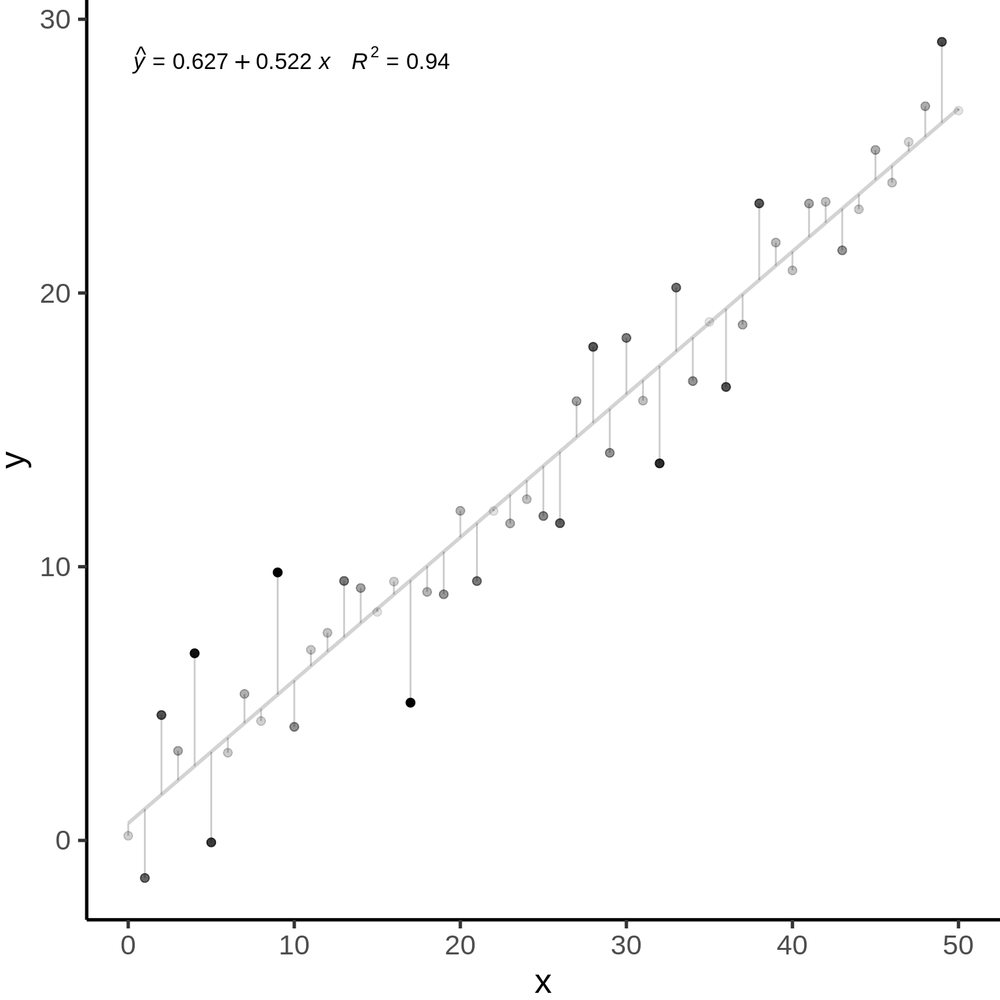

Chapter 3 Reviewing linear models
Much of our research focuses on investigating how patterns we observe can be explained by predictive variables.
We are often looking for a function \(f\) that can explain a response variable ( \(Y\) ) in terms of one ( \(X_1\) ) or many other predictors ( \(X_2\), \(X_3\), \(...\) , \(X_n\) ):
\[Y = f(X_1)\] The combination of predictive variables we have sampled will never fully explain \(Y\). Because of this, there is always unpredictable disturbance in our models, i.e. the error \(\epsilon\). As such, the error is an irrevocable part of our function:
\[Y = f(X_1, \epsilon)\] In Workshop 4, we have learned how to use general linear models as \(f(\cdot)\) to describe the relationship between variables. They were: the \(t\)-test, the analysis of variance (or, ANOVA), the linear regression (both simple, with one predictor, and multiple, with more than one predictor), and the analysis of covariance (ANCOVA).
3.1 General linear models
3.1.1 Definition
The general form of our function \(Y = f(X_1)\) as a linear function can be represented by:
\[Y = \beta_0 + \beta_1X_i + \varepsilon\]
where:
\(Y_i\) is the predicted value of a response variable
\(\beta_0\) is the unknown coefficient intercept
\(\beta_1\) is the unknown coefficient slope
\(X_i\) is the value for the explanatory variable
\(\varepsilon_i\) is the model residual drawn from a normal distribution with a varying mean but a constant variance.
3.1.2 Assumptions
Linear models only produce unbiased estimators (i.e. are only reliable) if they follow certain assumptions. Most importantly:
1. The population can be described by a linear relationship:
\[Y = \beta_0 + \beta_1X_i + \varepsilon\]
2. The error term \(\varepsilon\) has the same variance given any value of the explanatory variable (i.e. homoskedasticity), and the error terms are not correlated across observations (i.e. no autocorrelation):
\[\mathbb{V}{\rm ar} (\epsilon_i | \mathbf{X} ) = \sigma^2_\epsilon,\ \forall i = 1,..,N\] and,
\[\mathbb{C}{\rm ov} (\epsilon_i, \epsilon_j) = 0,\ i \neq j\]
3. And, the residuals are normal:
\[\boldsymbol{\varepsilon} | \mathbf{X} \sim \mathcal{N} \left( \mathbf{0}, \sigma^2_\epsilon \mathbf{I} \right)\] The estimations of general linear models as in \(\widehat{Y} = \widehat{\beta}_0 + \widehat{\beta}_1 X\) assumes that data is generated following these assumptions.

3.2 An example with general linear models
Let us simulate 250 observations which satisfies our assumptions: \(\epsilon_i \sim \mathcal{N}(0, 2^2), i = 1,...,250\).
nSamples <- 250
ID <- factor(c(seq(1:nSamples)))
PredVar <- runif(nSamples,
min = 0,
max = 50)
simNormData <- data.frame(
ID = ID,
PredVar = PredVar,
RespVar = (2*PredVar +
rnorm(nSamples,
mean = 0,
sd = 2)
)
)
# We have learned how to use lm()
lm.simNormData <- lm(RespVar ~ PredVar,
data = simNormData)We can plot the result of our lm() model to produce diagnostic figures for our model:
layout(
matrix(c(1, 2, 3, 4),
2, 2)
)
plot(lm.simNormData)
These graphs allow one to assess how assumptions of linearity and homoscedasticity are being met. Briefly, :
The Q-Q plot allows the comparison of the residuals to “ideal” normal observations;
The scale-location plot (square rooted standardized residual vs. predicted value) is useful for checking the assumption of homoscedasticity;
Cook’s Distance, which is a measure of the influence of each observation on the regression coefficients and helps identify outliers.
Residuals are \(Y-\widehat{Y}\), or the observed value minus the predicted value.
Outliers are observations \(Y\) with large residuals, i.e. the observed value \(Y\) for a point \(X\) is very different from the one predicted by the regression model \(\widehat{Y}\).
A leverage point is defined as an observation \(Y\) that has a value of \(x\) that is far away from the mean of \(x\).
An influential observation is defined as an observation \(Y\) that changes the slope of the line \(\beta_1\). Thus, influential points have a large influence on the fit of the model. One method to find influential points is to compare the fit of the model with and without each observation.